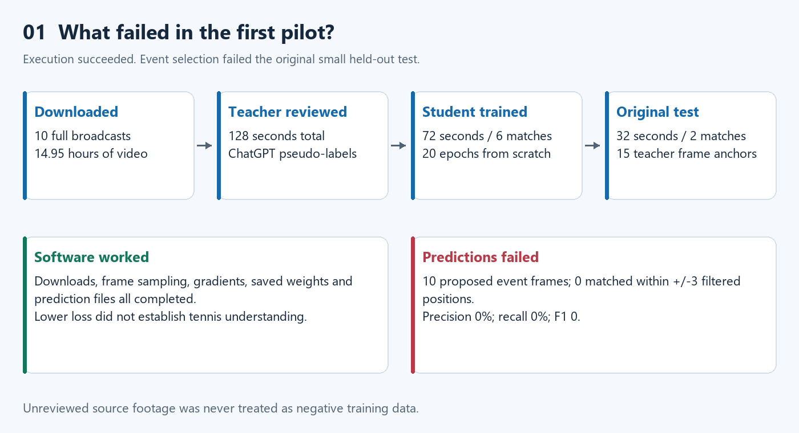
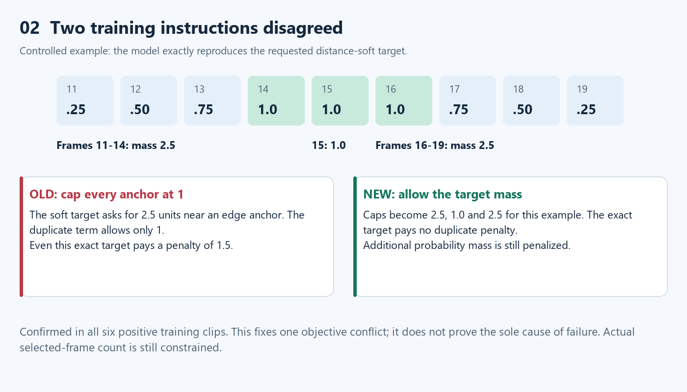
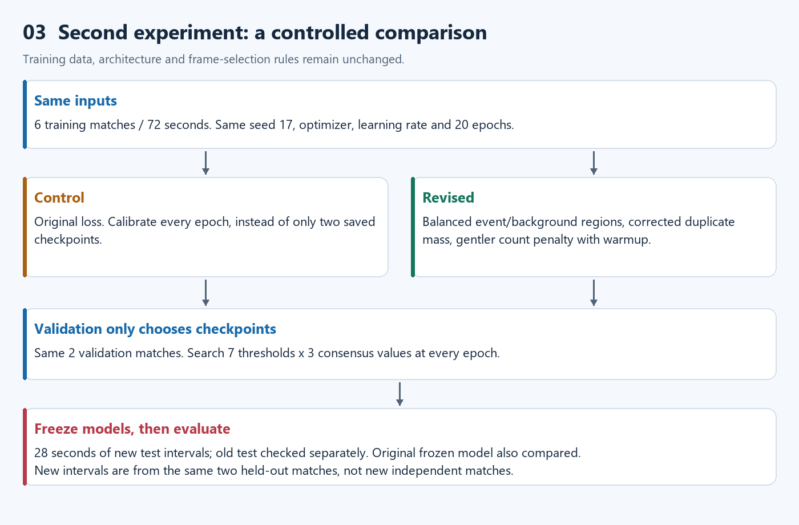
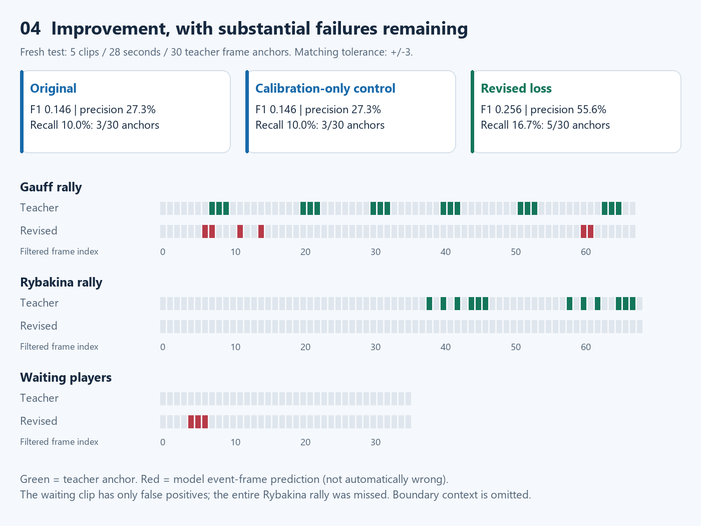

The revised model improved fresh-test F1 from 0.146 to 0.256, but recovered only 5 of 30 teacher anchors. It remains a research baseline.
Detailed explanation, measurements, limitations and reproduction steps



